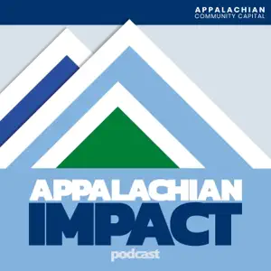
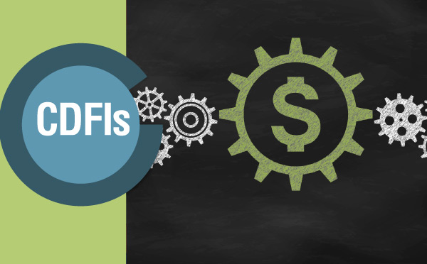
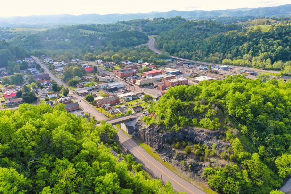
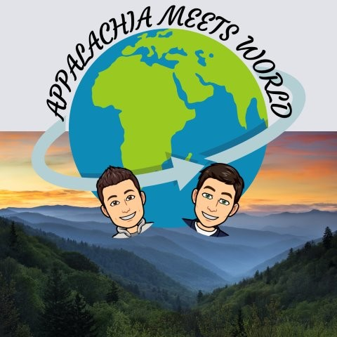
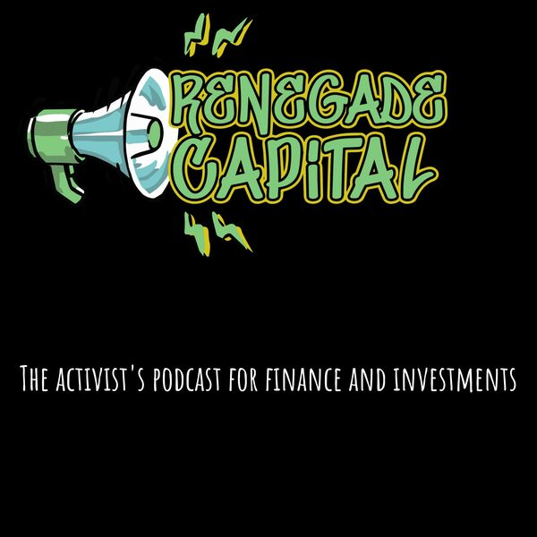
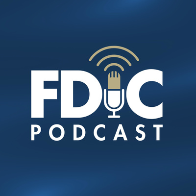

Announcements, Media &
Regional Insights
Explore Appalachian Community Capital's research publications, press announcements, newsletters, podcast episodes, and video features documenting community impact and capital deployment across 13 Appalachian states.
Publications & Regional Insights
Download our annual impact reports, strategic playbooks, and research studies evaluating CDFI capital access, rural community resilience, and economic development across Appalachia.
2025 Impact Report: Capital, Community, and Resilience Across Appalachia
In 2025, Appalachian Community Capital and our 44-member CDFI network deployed $55M in grants, sustained 8,000+ jobs through Hurricane Helene recovery, launched a $275M Resilient Capital Campaign, and connected 4,800+ small businesses to the capital and resources they need to grow. This is what mission-driven investment looks like. Read our full 2025 Impact Report and see what we accomplished together.
Read the ReportAppalachian Community Capital (ACC) Truist Foundation Report
In 2024, Appalachian Community Capital (ACC) received a grant from the Truist Foundation to increase access to capital for small business owners and to implement a Data Analytics Hub. These initiatives align with the Truist Foundation’s pillar of strengthening small businesses. ACC has successfully deployed this award to support diverse businesses by engaging CDFI members committed to leveraging flexible grant capital for inclusive economic growth.
Read the Report
Archive
View Archived Publications (Prior to 2025)
Assisting Diverse Small Farms and Non-Profits Under Kentucky's SOAR Program
Kentucky Highlands Investment Corporation (KHIC) deployed a $50,000 grant from ACC to support the SOAR Small Farm Loan Fund, providing technical assistance and low-interest microloans to women-owned and minority-owned agricultural operations across rural Kentucky counties.
Read Report (PDF)Supporting Diverse Small Businesses in the Appalachian Region
Summarizes how ACC member CDFIs utilized grant capital provided by ACC and Truist Foundation to assist diverse entrepreneurs, rural enterprises, and underrepresented borrowers throughout the 13 Appalachian states.
Read Report (PDF)Appalachian Community Capital: Investing in the Investors
An article by the Appalachian Regional Commission (ARC) exploring ACC’s wholesale intermediary model: raising equity and debt capital to scale participating community loan funds so they can create quality jobs, retain local wealth, and improve regional quality of life.
Learn About ACCRural Opportunity Zone and Recovery Playbook: A Resource for Economic Developers and Community Champions
Practical guidance for structuring financings with social and financial returns, attracting private capital to federally designated Opportunity Zones, and financing community recovery projects across Central Appalachia.
Read PlaybookEvaluation Report: ACC Business Assistance Response (BAR) Program
Distills key findings and recommendations from the emergency $3.56M Business Assistance Response program developed in partnership with ARC, supporting 31 lending organizations during the COVID-19 pandemic.
Read Report (PDF)Interviews with Former CDFI CEOs: Reflections on the Succession Experience
Conducted by Stepping Stone Partners, LLC for ACC. In-depth interviews and valuable lessons from retired and transitioned CDFI CEOs on executive transition, board readiness, and institutional legacy.
Read Study (PDF)Getting Rural Projects Ready for Investment
Opportunity Appalachia overview detailing pre-development support for 16 rural projects in OH, VA, and WV—connecting local sponsors with architectural design, market feasibility studies, and over $100M in financing.
Read ArticleNews & Press Releases
Official announcements, executive appointments, capital milestones, and strategic initiatives from Appalachian Community Capital and our regional CDFI network.
Appalachian Community Capital Welcomes Henry A. Golatt to Its Board of Directors
Appalachian Community Capital is pleased to welcome Henry A. Golatt as its incoming Loan Committee Chair and newest member of the Board of Directors. Founder & Principal of HG Consulting Services, LLC and Managing Partner at Growth AdvantEdge, Mr. Golatt brings extensive expertise in economic development and credit underwriting.
View Board of Directors →ACC Community Investment Notes Surpasses $3.4 Million, Expanding Capital for Community Lenders
Early investments from Heron and clients of Obran Capital Advisors, Trillium Asset Management, and Brown Advisory demonstrate growing investor interest in channeling capital to rural, low-wealth, and historically underserved communities across Appalachia.
Read Full Press Release (PDF) →Appalachian Community Capital Welcomes Three New Members to Board of Directors
ACC announces the appointment of three distinguished leaders to its Board of Directors: Robin Gabbard (President of Mountain Association), Khaliff Davis (Managing Director at Reinvestment Fund), and T.J. Bogdewic (President & CEO of Bridgeway Capital).
Read Full Press Release (PDF) →Honoring Donna Gambrell’s Legacy — and Investing in What Comes Next
At the end of 2025, Donna Gambrell concluded a remarkable career dedicated to expanding access to capital. To honor her legacy, ACC established the Gambrell Fund for Strategic Initiatives, designed to carry forward her vision of inclusive community finance.
Support the Gambrell Fund →ACC Welcomes Four New Members!
ACC expands its regional membership network, welcoming Community Ventures (Kentucky), Virginia Community Development Fund (Virginia), Disability Opportunity Fund (National), and Unified Trust to accelerate community investments.
Explore Member Network →Finance Trailblazer Donna Gambrell Receives 2025 Ned Gramlich Lifetime Achievement Award
Opportunity Finance Network (OFN) honored Donna Gambrell with the prestigious 2025 Ned Gramlich Lifetime Achievement Award for Responsible Finance in recognition of her groundbreaking national and regional contributions.
Read Announcement on OFN →Opportunity Appalachia 2025 Investor Convening Recap
Highlights and outcomes from the 2025 Opportunity Appalachia Investor Convening, bringing together community lenders, developers, and impact investors to advance transformational downtown and regional projects.
Read Convening Summary →2025 Opportunity Appalachia Investor Convening Photos
Explore photo coverage and key moments from the annual Opportunity Appalachia Investor Convening held in Charleston, West Virginia, celebrating regional partnership and community catalyst projects.
View Photo Gallery →Position Announcement: ACC President and Chief Executive Officer
Appalachian Community Capital initiated an executive search for its next President & Chief Executive Officer to guide the organization into its next decade of regional impact and capital expansion.
Read Position Announcement (PDF) →Donna Gambrell, President & CEO of Appalachian Community Capital, Announces Retirement
Donna Gambrell announced plans to retire at the end of 2025 after leading ACC since May 2017. Under her tenure, ACC expanded from 12 to 41 CDFI members representing over $3.5 billion in combined assets.
Read Press Release (PDF) →ACC Welcomes Four New Members!
Community Reinvestment Fund USA (Minnesota), Community Works of West Virginia (West Virginia), The Economic & Community Development Institute (Ohio), and IFF (Illinois) join the ACC CDFI network.
View Member Network →$240M in Requests Received for Game-Changing Investment in Rural America
The Green Bank for Rural America, an ACC subsidiary seeded by an award of $500M from the EPA, received more than $240M in preliminary financing requests for clean and renewable energy projects across rural communities.
Read Press Release (PDF) →
Archive
View Archived Press Releases (Prior to 2025)
Goldman Sachs Invests in Appalachian Community Capital and Regional Small Businesses
Goldman Sachs commits catalytic capital to ACC to support West Virginia and regional small business growth and 10,000 Small Businesses graduates.
Read on Goldman Sachs →ACC Names Daniel Wallace as President and CEO of Green Bank for Rural America
Appalachian Community Capital proudly announces Daniel Wallace as Chief Executive Officer to lead the $500 million Green Bank for Rural America subsidiary.
Read Press Release (PDF) →ACC Launches Western North Carolina Small Business Initiative with Lead Grant from Dogwood Health Trust
Launch of the $10M relief initiative providing up to $25,000 in emergency grants to small businesses damaged by Hurricane Helene.
Read Press Release (PDF) →ACC Receives $800,000 Financial Assistance Grant from CDFI Fund
The U.S. Department of the Treasury’s CDFI Fund awards ACC $800,000 to expand small business lending and community investments across Appalachia.
Read Press Release (PDF) →Appalachian Community Capital Awarded $1.3 Million Grant from Truist Foundation
Truist Foundation grant accelerates access to capital and technical support for diverse and rural small businesses across the Appalachian region.
Read Press Release (PDF) →ACC Formally Announces $500 Million Award from EPA Greenhouse Gas Reduction Fund
Official rollout of the Green Bank for Rural America, leveraging private capital to finance $2.25 billion in clean and renewable energy projects in rural communities.
Read Press Release (PDF) →ACC Seeks Coaching and Conference Management Services for Opportunity Appalachia
Solicitation for contractual support to provide specialized coaching and conference execution for Opportunity Appalachia community projects.
View RFP Document (PDF) →ACC Seeks Communications Support Services for Green Bank for Rural America
RFP for strategic communications and public relations services supporting the launch of the Green Bank for Rural America.
View RFP Document (PDF) →Appalachian Community Capital Selected for $500M Award from EPA's CCIA
EPA selects ACC for a historic $500 million Clean Communities Investment Accelerator award to catalyze clean energy and create 18,000 rural jobs.
Read Press Release (PDF) →ACC Receives $350,000 Matching Grant from Truist Charitable Fund
Matching grant supports Opportunity Appalachia redevelopment projects across North Carolina, Ohio, Tennessee, Virginia, West Virginia, and Kentucky.
Learn About Programs →ACC Launches Technology Transformation Project for CDFI Members in Western NC
Supported by Dogwood Health Trust to enhance lending infrastructure and capacity for small business lender ecosystems.
Read Press Release (PDF) →Connect Humanity Partners with ACC to Raise $25M to Bridge the Digital Divide
Joint campaign through IDEA (Investing in Digital Equity in Appalachia) to fund high-speed community broadband infrastructure.
Read Press Release (PDF) →Opportunity Appalachia Investor Convening Showcases 33 Projects Seeking $252M
Virtual convening anticipated to create 3,000 jobs across coal-impacted and rural Appalachian communities.
Read Press Release (PDF) →ACC Receives Over $600,000 from CDFI Fund's Equitable Recovery Program
U.S. Treasury grant intended to spur economic recovery and small business growth in areas heavily impacted by the pandemic.
Read Press Release (PDF) →Virginia CDFI Coalition Celebrates Win For Virginia
Governor Youngkin signs SB 1320 and HB 1411 into law, officially codifying and recapitalizing the Virginia CDFI Fund.
Read Press Release (PDF) →Upcoming Events: Lunch & Learn Webinars
ACC's Lunch & Learn series returns in 2027, bringing members practical insights, peer learning, and expert perspectives on issues shaping community development finance
2027 Executive Lunch & Learn Webinars
Registration details will be available in early 2027.
Rural Opportunity Zones / C-PACE
Exploring how Commercial Property Assessed Clean Energy (C-PACE) financing and Rural Opportunity Zone capital structures can be combined to fund catalytic commercial, industrial, and community facility revitalization across Appalachia.
Data Centers & Rural Broadband
Addressing rural digital equity, evaluating community-scale broadband connectivity financing, and navigating the economic, infrastructure, and energy considerations associated with regional data center growth.
Rural Healthcare
Overcoming healthcare provider and clinic deserts through innovative mobile clinic deployments, community health center capacity building, and mission-driven CDFI capital solutions for rural medical facilities.
Project Equity
Preserving cornerstone small businesses and anchoring local community wealth by facilitating transitions to employee ownership, worker-owned co-ops, and Employee Ownership Trusts (EOTs).
ACC Newsletters
Explore past editions of our monthly newsletter highlighting member loan updates, program milestones, regional economic spotlights, and opportunities across Appalachia.
Archive
View Archived Newsletters (2022–2024)
Podcasts & Audio Series
Listen to conversations with community development practitioners, federal leaders, and innovative lenders discussing CDFI impact, rural capital access, and regional resilience.

Appalachian Impact
ACC’s original limited series podcast exploring high-impact community investment, local leadership, and the dedicated CDFIs driving opportunity and prosperity across the Appalachian region.
Listen on Apple Podcasts →
CDFIs: Serving the Underserved and Making Missing Markets
Produced by the Federal Reserve Bank of New York. Discusses how Community Development Financial Institutions fill critical lending gaps, support diverse small businesses, and structure capital in overlooked markets.
Listen on NY Fed →
Why CDFIs are Essential for Community Health and Prosperity
Build Healthy Places Network’s video snapshots feature exploring how mission-driven capital from CDFIs directly strengthens community health, neighborhood well-being, and local economic security.
Watch & Listen →
Appalachia Meets World – Ep. 92: Access to Capital in Appalachia
February 17, 2023. A comprehensive look into how community financial intermediaries address credit disparities, foster regional innovation, and unlock economic resilience across coal-impacted counties.
View Episode Details →
Are CDFIs the Original Capital Renegades?
November 1, 2021. A candid discussion exploring how mission-based lenders rewrite the traditional rules of finance, dismantle barriers to credit, and center equity in underserved communities.
Listen on Buzzsprout →
Banking in Rural America
January 9, 2023. Federal Deposit Insurance Corporation feature discussing rural banking ecosystems, community bank partnerships, and how CDFIs collaborate to bring vital financing to small towns.
Listen on FDIC Anchor →Closing the Broadband Gap in Appalachia
September 5, 2023. Insights into bridging the regional digital divide through catalytic loan capital, public infrastructure grants, and collaborative broadband development initiatives.
Listen on FDIC Anchor →Videos & Story Spotlights
Watch video profiles of our regional small business recovery initiatives, program partnerships, and the landmark ACC CDFI CEO Succession Planning video series.
Western North Carolina Small Business Initiative (WNCSBI)
Through the Western North Carolina Small Business Initiative, ACC and our partners are helping local entrepreneurs access the funding, guidance, and support needed to rebuild, grow, and thrive. Watch how collaboration and investment are fueling small business resilience across the region.
Watch on YouTubeOpportunity Appalachia: Pre-Development Stage Support
Opportunity Appalachia provides support for projects at the pre-development stage—connecting local project sponsors to experts in financial structuring, tax credits, market assessment, pro forma development, and preparation of investment prospectuses.
Watch on YouTubeKentucky Highlands & American Health Management
Learn how Kentucky Highlands Investment Corporation finances justice and change with American Health Management owner Kelly Upchurch in Southeastern Kentucky, in partnership with Appalachian Community Capital.
Watch on YouTube“Bankless in America” – Financial Times
December 12, 2022. Financial Times feature exploring banking deserts in rural communities and the indispensable role played by community development financial institutions in sustaining local businesses and families.
Watch on YouTubeACC CDFI Succession Planning Video Series
An ACC publication on CDFI succession planning contains insights from former CDFI CEOs who have recently retired or transitioned to other leadership positions. Hear their firsthand perspectives on organizational longevity, board engagement, and the ongoing mission of the CDFI industry.
Read the Companion Succession Study (PDF) →Lenwood Long – CSBDF
Lenwood Long served many roles with Carolina Small Business Development Fund (CSBDF) and predecessor organizations dating back to 1989, helping build services to minority credit unions across North Carolina.
Watch on YouTubeRon Phillips – CEI
Ron founded Coastal Enterprises, Inc. (CEI) in 1977 and served as CEO for nearly 40 years, pioneering rural community economic development models and consumer financial protections.
Watch on YouTubeGary Lindner – PeopleFund
Gary led PeopleFund from 2010 through 2019, growing the organization from one location to nine across Texas, securing SBA authorizations, and scaling lending capacity.
Watch on YouTubeDeborah McKetty – CommunityWorks
Deborah founded CommunityWorks in 2005 as Greenville Housing Fund, expanding it into microlending and consumer finance across upstate South Carolina before her departure in 2020.
Watch on YouTubeMark Peterson – Bridgeway Capital
Mark founded Bridgeway Capital in 1990 and served as CEO for 29 years until 2019, growing assets over $100M and achieving $20M in annual lending volume across western PA.
Watch on YouTubeNancy Andrews – LIIF
Nancy was CEO of the Low Income Investment Fund (LIIF) for 20 years from 1997 to 2017, building a national platform investing in affordable housing, early child care, and community facilities.
Watch on YouTubeEric Weaver – Opportunity Fund
Eric Weaver founded Opportunity Fund (now Accion Opportunity Fund) in 1992 upon graduating from Stanford Business School, serving as CEO until 2017 before continuing as Senior Advisor.
Watch on YouTube